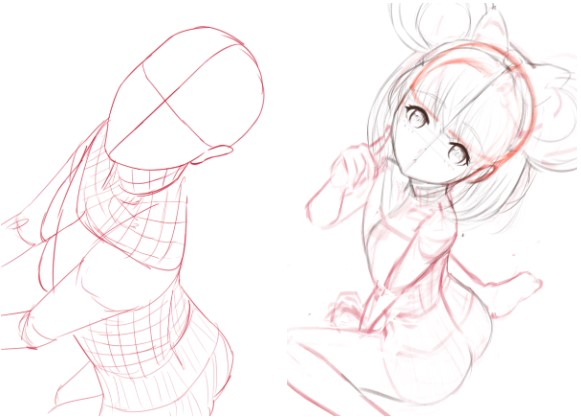
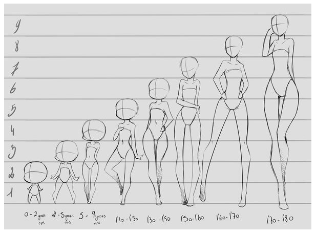
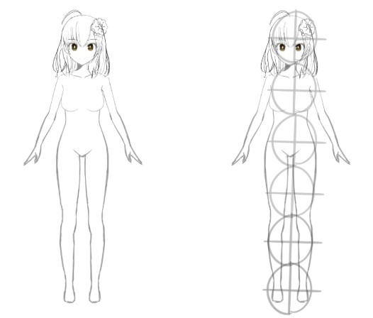
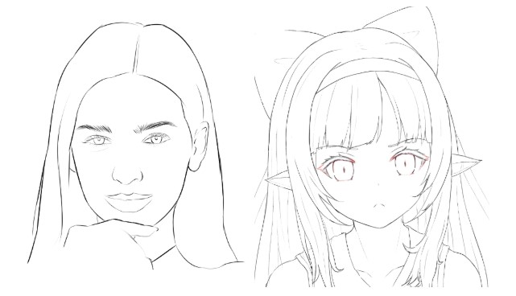
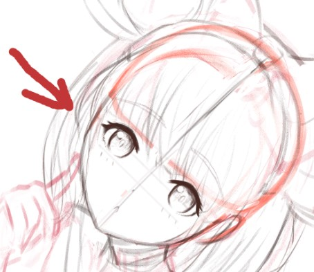
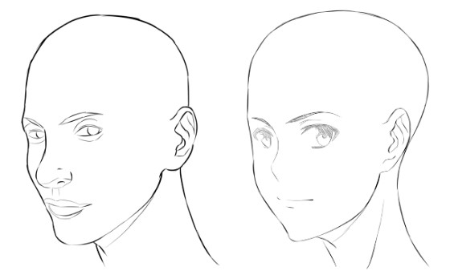
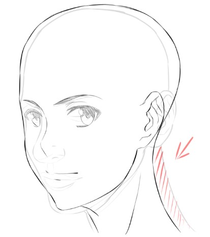
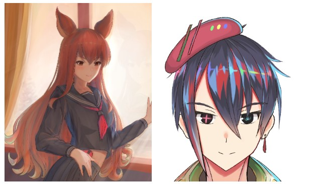
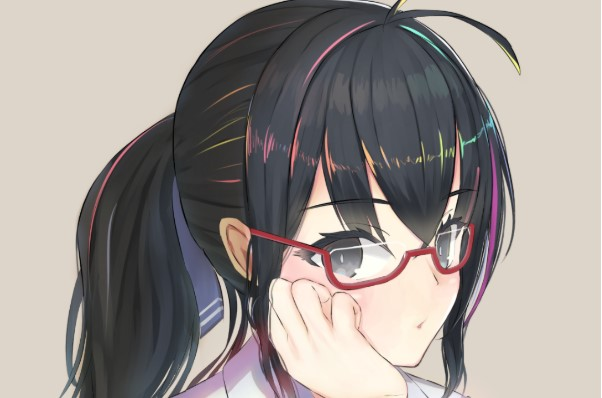

จากประสบการณ์ในการนำโพสจากภาพคนจริงๆ มาใช้ในการวาดรูปอนิเมะหลาย ต่อหลายครั้ง ทำให้ปมได้พบกับปัญหาที่ว่า
เอ้ะ! เราควรจะแก้สัดส่วนตรงไหนดี เพื่อให้ได้ภาพตัวการ์ตูนออกมา

จะแก้น้อยไป...มันก็ดูเหมือนคนจริงๆ
จะแก้มากเกินไป...มันก็ทำให้ภาพที่เอามาเป็นโพส เหมือนไม่มีความหมาย
วันนี้ผมจะมาไขข้อข้องใจของทุกคน กับ 4 อย่าง ที่ตัวละครอนิเมะ ไม่เหมือนกับคนจริงครับ
1. สัดส่วนของหัวกับร่างกาย

ในภาษาญี่ปุ่น จะมีคำศัพท์ที่เรียกว่า 頭身 (toushin) ซึ่งหมายถึง ขนาดของหัว เมื่อทียบกับตัว เช่น
6頭身 หมายถึง ความยาว 6 หัว จะเป็นความยาวของตัวคาแรกเตอร์ การที่เรา ลด 頭身 ของเราลง ก็จะมีผล ทำให้อายุของตัวละครเด็กลงด้วยครับ

แต่ก็มีหลายครั้ง ที่ ถึง 頭身 เราจะน้อย แต่ว่า เราก็สามารถแสดงให้ตัวละคร เป็นผู้ใหญ่ ได้ ขึ้นอยู่กับลายเส้นของผู้เขียนครับ
2. ขนาด และ ตำแหน่ง ของตา จมูก ปาก คิ้ว

นี่อาจจะเป็นส่วนที่ใครๆก็รู้อยู่แล้วนะครับ ว่า ตา จมูก ปาก คิ้ว ของตัวการ์ตูน นั้นมีความต่างออกไปจากบทความที่แล้ว

หากเราสังเกตดีๆตา จมูก ปาก คิ้ว ของตัวละคร จะอยู่ ครึ่งล่างของหน้า ผิดกับคนปกติ เพราะว่า การที่ผมวาด ตา จมูก ปาก ไว้ส่วนล่าง จะมีผลทำให้ หน้าตาของตัวละครของเราเด็กลงครับ และนั่นก็จะทำให้ หน้าผากของตัวละครใหญ่ขึ้นกว่าคนปกติ เป็นอีกจุดหนึ่งที่แตกต่างกับคนจริงๆครับ
แต่ทั้งนี้ทั้งนั้น ก็ขึ้นอยู่กับ ลายเส้นของผู้เขียนครับ
3. สัดส่วนหลังคอ ที่หายไปครับ

นี่เป็นภาพที่ผมวาดขึ้นครับ อย่างที่เห็น ภาพด้านซ้าย คือ คนจริงๆ ส่วนด้านขวาคือ ภาพตัวละครญี่ปุ่น เมื่อเราเอาภาพทั้งสองภาพ มาเทียบกัน เราจะพบว่า

จากการวิวัฒนาการ ของ ตัวการ์ตูนมานับแรมปี ทำให้คอของตัวละครหดเล็กลง เพื่อรองรับสรีระ ของหัวที่มีขนาดใหญ่ขึ้น ของตัวละคร นี่เป็นเรื่องที่ผมก็พึ่งสังเกตมาเมื่อไม่นาน หลังจากได้อ่านหนังสือ
เกี่ยวกับการวาดรูปของญี่ปุ่น ที่มีชื่อว่า イラスト解体新書
4. เส้นผมที่ยาวมากกว่าปกติ

อันนี้เป็นสิ่งที่ผมคิดว่าคนหลายๆน่าจะสังเกตเห็นกันแล้ว แต่อาจจะยังไม่เข้าใจว่าทำไม ตัวละคร ถึงต้องมีผมยาวขนาดนี้
สาเหตุมีด้วยกันหลายๆอย่างครับเช่น
- เพื่อแสดงลักษณะ นิสัยของตัวละคร
- เพราะว่า มันทำให้น่ารัก สังเกตจากพวกตุ๊กตา ที่จะมีผมยาว
- ถ้าผมสั้น ส่วนใหญ่ จะไม่สามารถทำให้เด่น จะได้เป็นตัวรอง หรือ Mob
นอกจากผมจะยาวแล้ว ส่วนใหญ่ ก็จะไว้ผมหน้าม้า เพื่อ ปิดหน้าแสดงให้เห็นว่าหน้าเล็ก แล้วเราก็จะได้ย้ายตาลงมาส่วนหน้าด้านล่างเพื่อให้ ดูน่ารักขึ้นครับ

สำหรับบทความนี้ก็จบเพียงเท่านี้ครับ หากมีอะไรไม่เข้าใจ หรืออยากให้เพิ่มเติม สามารถติดต่อมาได้ทาง facebook page เลยนะครับ ^-^